Molding & Casting + 3D Machining
This document the process of designing a 3D mould for casting of parts
There are two different methods of creating a mould
-
Master (3D machining) (+ve hard)
Silicone Mould (-ve soft)
Resin Cast (+ve hard) -
Master/Mould (3D machining) (-ve hard)
Cast [silicone] (+ve soft)
Mould --> Silicone Rubber RTV 620
Cast --> Smooth On - Smooth Cast 300
For this assignment, i will be using the first method to make a resin cast.
| I decided to cast a gear, so i designed the negative mould for the object to be cast. Firstly, i created the box for the mould, its dimensions are 80mm x 80mm x 25mm (L x W x H), and the walls are 5mm thick. | 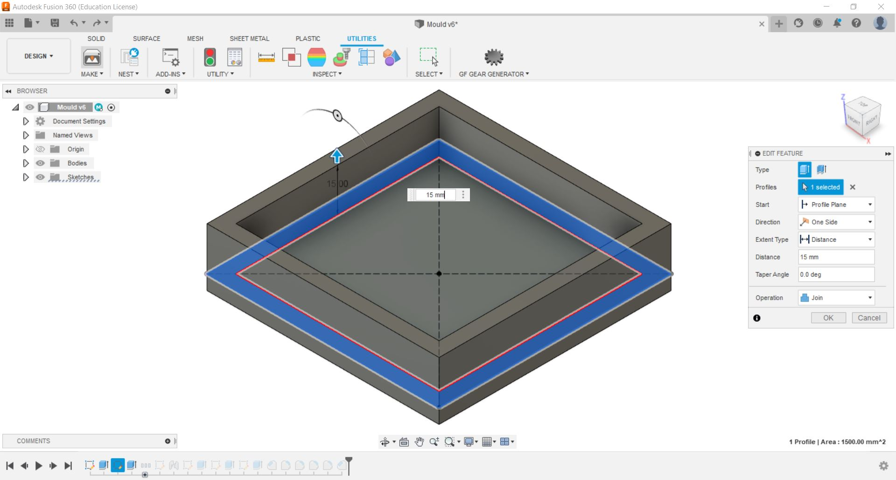 |
| Next, I used the Spur Gear Add-ins to create a model of the gear. From there, i project geometry the gear surface to get the sketch of the gear and extruded it to join with the box. Lastly, i create some sketches and negative extrusions to add some designs to the gear. | 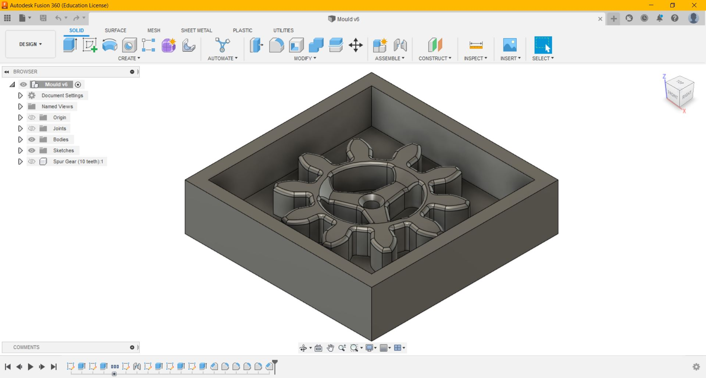 |
| After designing the mould in Fusion 360, i changed the workspace from Design to Manufacture. To create tool paths, i go to 3D > Adaptive Clearing | 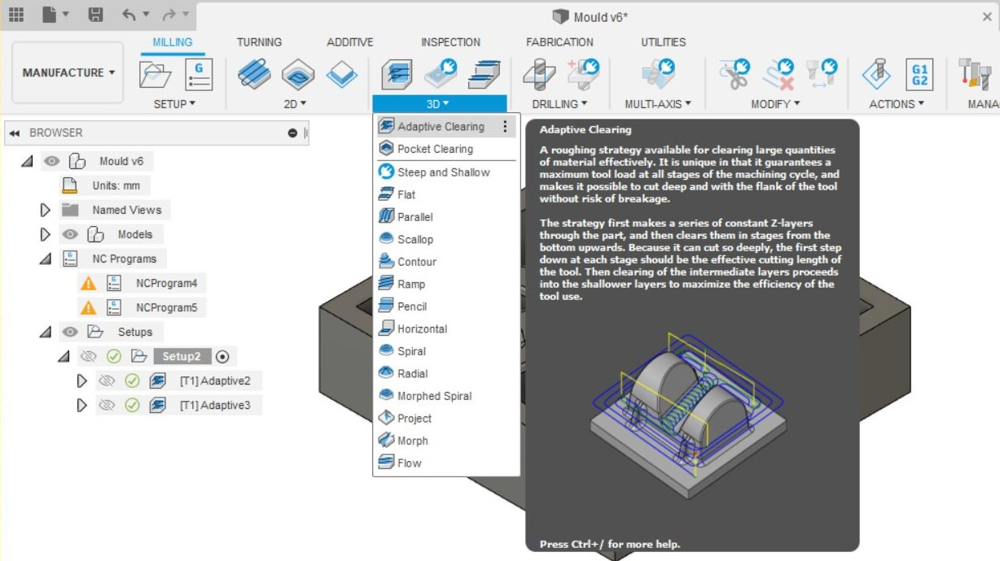 |
| Next i select the tool and set the relevant parameters. The tool i will be using is a 3mm flat end mill. I set the Maximun Roughing Stepdown to 6mm and Fine Stepdown to 0.3mm | 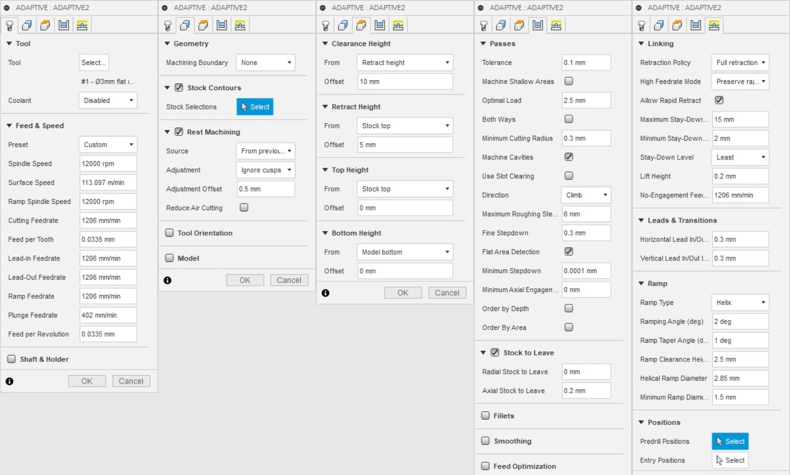 |
| After Creating the toolpaths, to get the NC code, i go to Setup > Create NC Program, from there, select the proper post processor and name the file. | 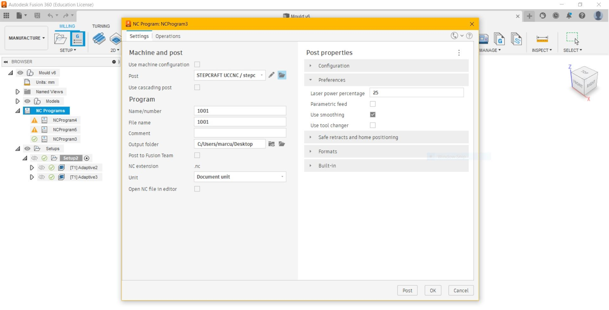 |
| The post processor for the Stepcraft 420 can be downloaded from here https://cam.autodesk.com/hsmposts . | 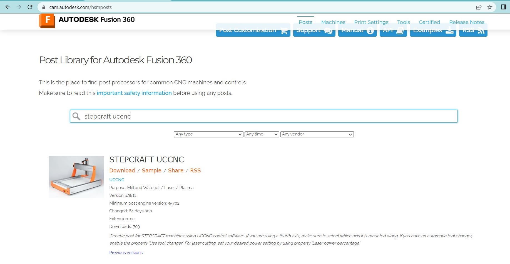 |
| After downloading the right post processor, i select the post processor from My posts > Local > Import > the file i downloaded. Click Ok and go to NC Programs > Post Process, and the NC code is created. | 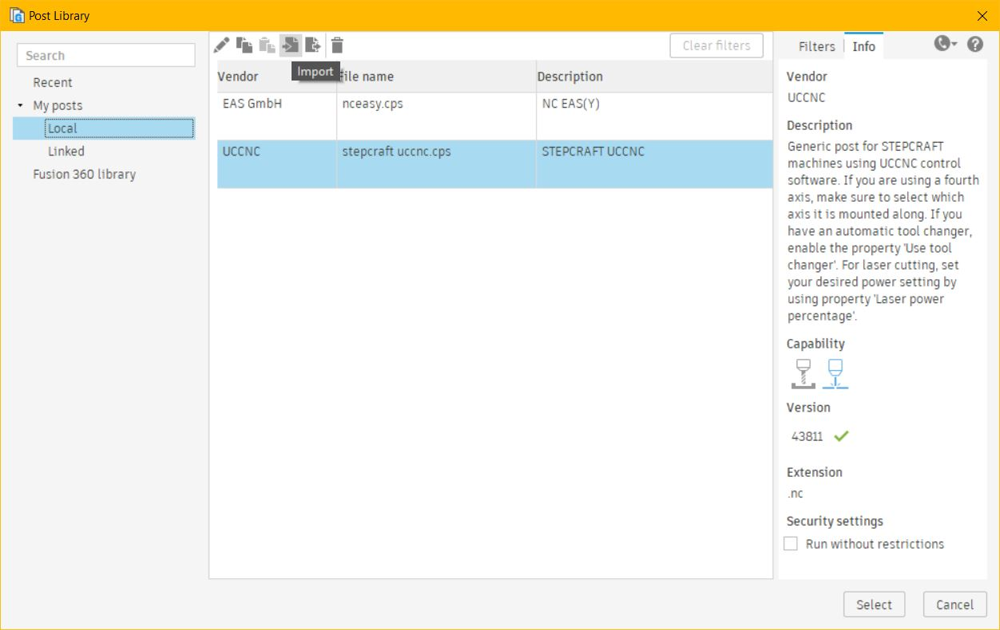 |
| To comfirm that the toolpaths and nc program are right and to ensure that there is no collision, i ran the simulation. | 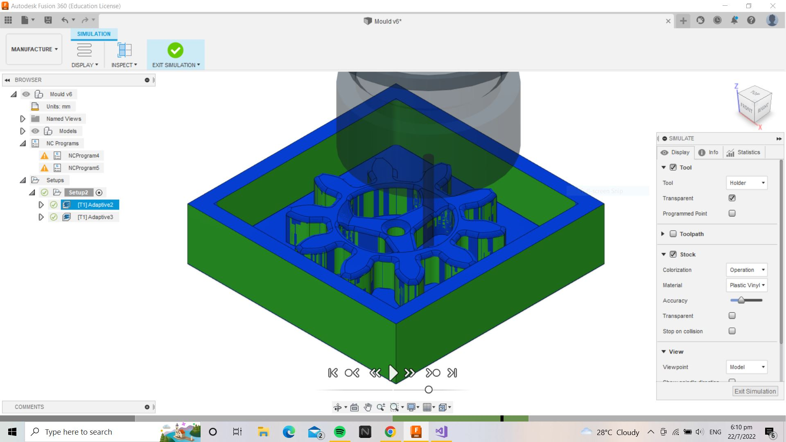 |
| Before milling the mould, i cut the blue foam to a size of 80mm x 80mm and marked the center with a marker. I also placed double sided tape at the bottom of the foam and stick it securely to the cutting bed. | 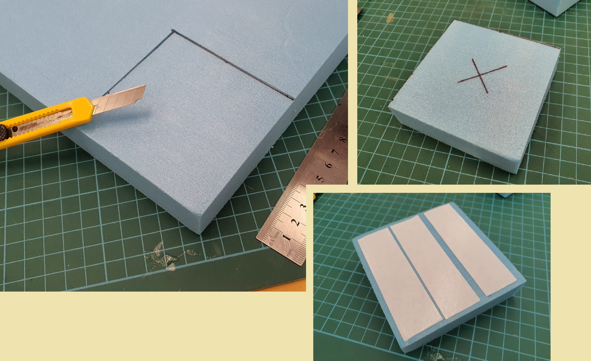 |
| After changing the tool to the 3mm flat end mill, I loaded the NC file onto the software and set the X & Y, & Z axis to be on the center of the foam. After that, the program is ready to run. | 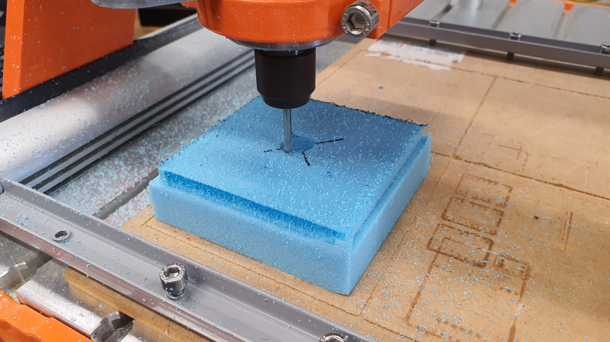 |
| This is the end product of the master mould. | 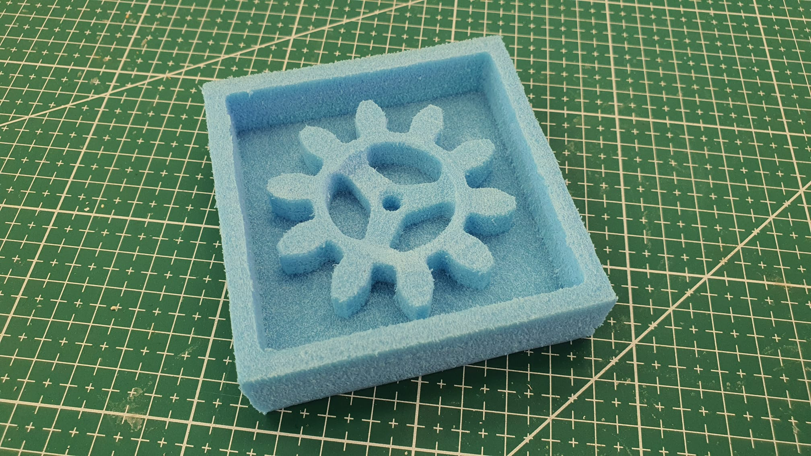 |
| Next i prepared the mixture for the silicone, I measured 50 grams of part A and 50 grams of Part B and mixed it together. The mixture must be stirred gently to ensure that minumum air bubbles are formed. I poured the mixture into the mould slowly. | 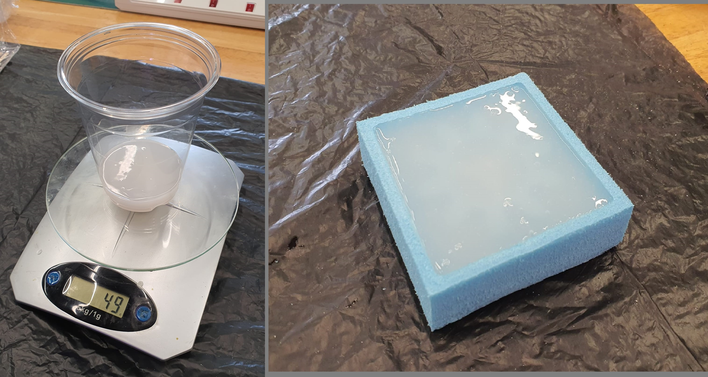 |
| I left the mould to cure over the weekends. | 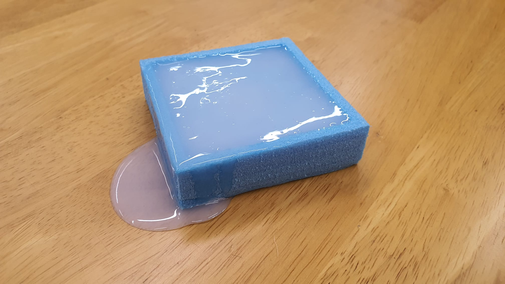 |
| The silicone mould cannot be removed without damaging the blue foam as i did not created a draft angle during the designing process. Hence, i have no choice but to break the master mould. | 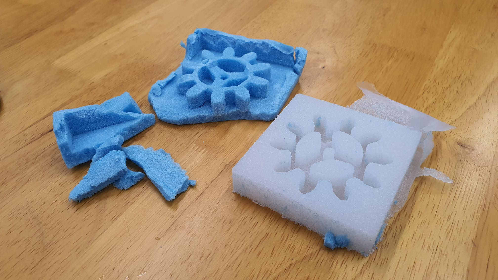 |
|
Next, i start to prepare the mixture for the resin cast Refering to the MSDS (Material Safety Data Sheet):
|
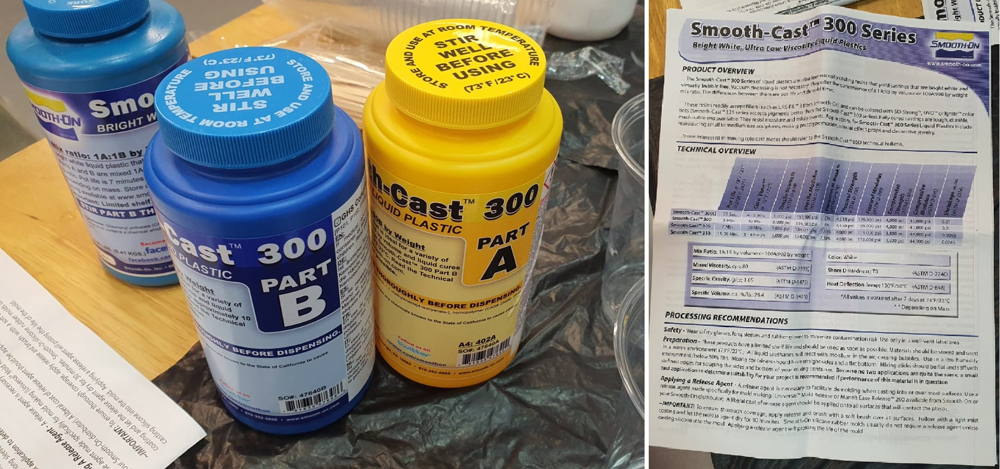 |
| I measured 50 grams of part A and 45 grams of part B in seperate cups, and mix them for a while and pour it into the moulds. The mixture was clear at first, as it cures, the resin slowly turns white. | 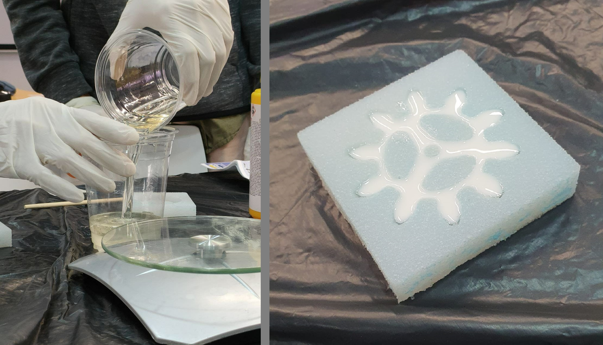 |
| This the end product of the resin cast. | 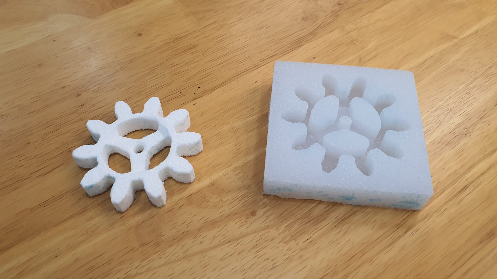 |